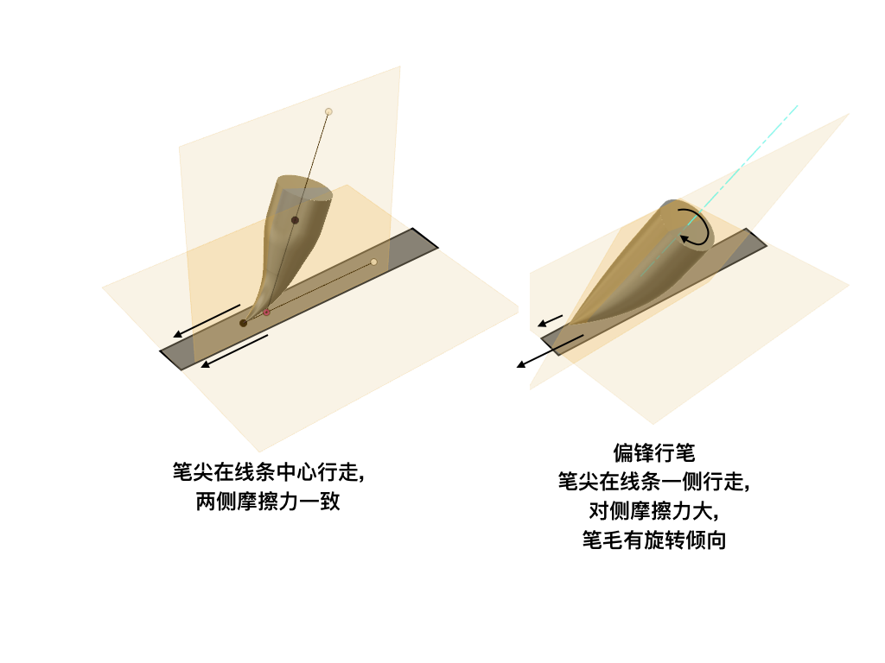

一种判定用笔正确与否的定量方法
据说是开尔文勋爵的语录:
度量就是了解。如果你不能测量它，你就不能改善它。 To measure is to know. If you can not measure it, you can not improve it.
唐代张怀瓘说: “夫书，第一用笔，第二识势，第三裹束“
我以为:
- 用笔是科学问题, 关注对不对: 如何行笔可以保持笔尖能够回复到初始状态;
- 识势是技术问题, 关注好不好: 按什么loss可以求最优解, 哪些常用解是独立的, 哪些是耦合的;
- 裹束是艺术问题, 关注美不美: 我不懂.
现在练字只关心科学问题. 最近发现了定量度量用笔对不对的方法.
材料:
- 毛笔、宣纸、墨汁、台灯
- 透明玻璃桌, 最好有两层
- 相机或可拍照的手机
- 如果使用手机推荐VLLO这个视频编辑app
- 一次性无纺布垫单
- 在淘宝上搜“垫单”即可, 找最便宜的. 尺寸无所谓, 只要比写的字大就可以了. 实际上一张就可以永久用下去.

方法:
按照从上到下: 台灯->宣纸->垫单(深色向上)->玻璃桌面->相机的顺序摆好材料. 相机对准要写字的区域.
垫单是关键. 一般来说写毛笔字在宣纸下面铺的是毛毡, 用来吸除渗透过纸面的墨汁, 避免墨汁再次返回或者蹭脏桌面. 垫单有两面, 仔细看可以看出来, 一般颜色深一点的是吸水层, 颜色浅一点的是隔水层.
毛毡是不透明的, 所以不可能从背面来观察写字过程, 而垫单很薄, 半透明, 如果台灯的照明足够亮, 是可以透过垫单从背面看到写字的过程. 用相机把这个过程录下来. 注意如果用手机前置摄像头录制,可能录完以后左右是反的, 需要用软件镜像一下.

测量指标与结果
对于每一笔, 特别是长笔画, 暂停视频, 测量笔画行进的端面与行进方向之间的夹角.
比如“登”字这一撇, 我写的时候笔画行进的端面与行进方向, 大概是135度

而这一捺, 大约是90度.

笔法的正确度负相关于abs(角度-90). 90度的时候, 用笔是正确的, 其他角度则可能有问题.
讨论
之前讲过用笔的基本定理:
基本定理：写完一笔以后, 笔应该恢复到能够写下一笔的状态。
也就是说, 一笔写完以后, 由于笔的弹性, 笔应该回到初始状态, 笔锋是处于聚拢状态的。不妨称为“回归律”
要满足“回归律”, 笔毛不能绞在一起. 理想情况下, 特别是长笔画, 笔锋应当走在笔画的中央, 这样两侧受力是对称的, 这种情况下, 笔画行进的端面是垂直于行进方向, 毛笔也在垂直于纸面的平面内运动. 而如果是偏锋行笔, 那么毛笔两侧的受力不同, 短距离或者下笔力量轻时, 可能影响不大, 但如果长距离行笔, 或者用力下蹲, 使用了三分笔的地步(整个毛笔的1/3压在纸面上), 那么就有可能因为两侧受力不均而导致绞锋.
偏锋行笔时的受力

在写字时, 由于蘸了墨的毛笔是黑色的, 写出来的笔画也是黑色的, 所以其实并不容易看清笔锋的位置和方向; 由于毛笔和手的遮挡, 笔的端面也不容易看清; 写字过程中笔管的方向有时候自己也意识不到. 而从背面拍摄写字的过程, 这些遮挡就都没有了, 一下就简化成了一个角度测量的问题, 于是可以用来定量判定用笔是否正确.